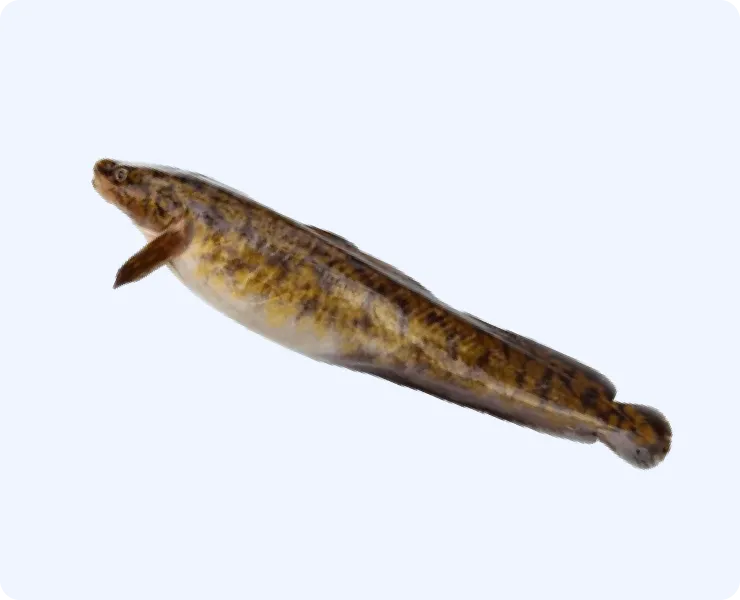

Рыба для пруда
Налим
Цена и наличие
- 15-30 см45 BYN / шт.В наличии
- 30-35 см67,5 BYN / шт.В наличии
Данные на 23.11.2026.
Характеристики
- Внешний вид
- Имеет стройное и удлиненное тело, которое слегка сплюснуто с боков, покрыто мелкой чешуей
- Сезонность
- Март-сентябрь
- Возраст
- Сеголетки, годовики
- Максимальный вес
- До 34 кг
- Продолжительность жизни
- До 20 лет. Скорость роста и продолжительность жизни зависят от температуры воды, кормовой базы, размеров водоема и условий зимовки
- Половая зрелость
- В условиях Центральной Европы самцы обычно созревают примерно в 2 года, самки — в 3 года. В более холодных водоемах половое созревание может происходить позднее. Половозрелость обычно наступает при длине около 35–40 см
- Питается
- Налим — хищная донная рыба. Молодь питается личинками насекомых, ракообразными, моллюсками и другими беспозвоночными, а по мере роста основой рациона становится рыба. Крупный налим способен поедать малька и взрослых рыб подходящего размера
- Температура воды для активного питания и размножения
- Наиболее благоприятная температура для роста молоди составляет примерно 15–18 °C; максимальная кормовая активность отмечается около 18 °C. Налим является холодноводной рыбой и плохо подходит для длительного содержания в сильно прогревающихся водоемах. Размножается зимой при температуре воды ниже 6 °C, обычно в наиболее холодный период года
- Условия пруда для содержания
- Лучше всего подходит глубокий, прохладный, хорошо насыщенный кислородом пруд с холодными придонными участками и укрытиями. Желательно поддерживать растворенный кислород не ниже 5 мг/л, а для хорошего роста — около 6–8 мг/л. Особенно важно, чтобы летом в водоеме сохранялась зона с температурой ниже 18–20 °C
- Рост
- Сеголетки 100 г, двухлетки 300 г, трехлетки 500 г
Описание
Налим — единственный представитель трескообразных, постоянно обитающий в пресной воде.
УСЛОВИЯ ОБИТАНИЯ
Налим (Lota lota) — единственный представитель трескообразных, постоянно обитающий в пресной воде. Это холодноводная рыба, распространенная в реках и глубоких озерах северной части Европы и Азии. Налим преимущественно ведет донный и сумеречно-ночной образ жизни, а днем часто скрывается возле коряг, камней, корней и других укрытий. Для прудового содержания налиму требуется прежде всего холодная вода. Наиболее комфортные условия находятся примерно в диапазоне 4–18 °C, а молодь хорошо растет при 15–18 °C. Для обычного мелкого декоративного пруда, который летом прогревается до 22–25 °C и выше, налим подходит плохо. В таком водоеме главной проблемой будет не зимовка, а именно летний перегрев. Пруд желательно делать достаточно глубоким, чтобы летом возле дна сохранялась более холодная вода. Полезны затененные участки, коряги, каменные укрытия и другие места, где рыба может находиться днем. При этом необходимо избегать чрезмерного накопления ила и разлагающейся органики. Налим предпочитает хорошо насыщенную кислородом воду. Исследования молоди показывают, что она способна переносить снижение растворенного кислорода примерно до 5 мг/л без резкого ухудшения роста, однако лучшие показатели наблюдаются при более высоком содержании кислорода. Поэтому для прудового содержания желательно использовать аэрацию и поддерживать примерно 6–8 мг/л. С другими рыбами налима необходимо содержать с учетом его хищного образа жизни. Мелкий карась, плотва, окунь, молодь карпа и декоративных рыб могут стать кормом. Чем крупнее становится налим, тем большую долю его естественного рациона составляет рыба.
РАЗМНОЖЕНИЕ
Налим необычен тем, что размножается зимой, когда большинство других прудовых рыб практически неактивно. Нерестовый период в разных регионах продолжается примерно с ноября по март, а непосредственно нерест происходит при температуре воды ниже 6 °C. Половозрелые рыбы собираются группами на подходящих участках дна. Во время нереста несколько самцов и самок могут находиться очень близко друг к другу, одновременно выделяя икру и молоки. Специальных гнезд налим не строит и потомство после нереста не охраняет. Икра небольшая, слабоклейкая и полупелагическая. После оплодотворения она распределяется возле дна и развивается в холодной воде. В зависимости от температуры развитие продолжается примерно 40–70 суток. После вылупления личинки некоторое время находятся в верхних слоях воды и питаются мелким зоопланктоном и дрейфующими беспозвоночными. По мере роста молодь переходит к донному образу жизни и постепенно начинает употреблять более крупную животную пищу. В достаточно большом, холодном и хорошо насыщенном кислородом пруду естественный нерест теоретически возможен. Однако для стабильного получения потомства необходимы подходящая зимняя температура, достаточная площадь водоема, подходящее дно и наличие половозрелых производителей, поэтому в небольшом декоративном пруду гарантировать самостоятельное размножение нельзя.
КОРМЛЕНИЕ
Молодой налим питается преимущественно животной пищей: личинками водных насекомых, ракообразными, моллюсками, червями и другими беспозвоночными. По мере роста происходит выраженный переход к хищничеству, и основой питания взрослых рыб становится рыба. Налим преимущественно активен вечером, ночью и в условиях слабой освещенности. Поэтому корм лучше давать ближе к вечеру и распределять в придонной зоне. Рыба хорошо ориентируется возле дна и активно ищет корм даже при слабом освещении. При искусственном содержании можно использовать высокобелковый тонущий корм для хищных холодноводных рыб. В исследованиях молодь налима успешно выращивали на специализированных высокобелковых кормах, аналогичных кормам для форели. Размер гранул необходимо подбирать в соответствии с размером рыбы. Наиболее эффективный рост молоди наблюдается примерно при 15–18 °C. Экспериментально максимальная кормовая активность была получена около 17,9 °C, а максимальная скорость роста — около 16 °C. Поэтому летом при значительном прогреве воды интенсивное кормление не компенсирует неподходящую температуру. При совместном содержании необходимо учитывать хищничество и возможный каннибализм. Разница в размерах рыб не должна быть слишком большой, особенно при выращивании молоди. Наличие достаточного количества полноценного корма уменьшает пищевую конкуренцию, но не исключает поедание мелких рыб.
ЗИМОВКА
Зима — естественный период активности налима. Он исключительно хорошо приспособлен к холодной воде и не просто переносит низкие температуры, а именно в холодный период становится наиболее активным и размножается подо льдом. В отличие от теплолюбивых прудовых рыб, налим зимой не впадает в состояние глубокого покоя. Он продолжает передвигаться и питаться, а при достижении половой зрелости именно зимой происходит нерест. Поэтому полностью прекращать кормление только из-за низкой температуры воды не требуется — необходимо ориентироваться на фактическую активность рыбы. Главное требование к зимовке — достаточное содержание растворенного кислорода. Длительный ледяной покров в небольшом заиленном пруду может привести к кислородному дефициту, несмотря на устойчивость налима к холоду. Перед зимой желательно убрать избыточную отмершую растительность, листья и другую органику. В непроточном водоеме рекомендуется зимняя аэрация. При достаточной глубине, хорошем кислородном режиме и отсутствии заморных явлений налим прекрасно зимует в открытом пруду в условиях Беларуси. При этом наиболее сложным периодом его содержания является не зима, а жаркое лето, когда необходимо обеспечить глубокую прохладную и насыщенную кислородом зону.